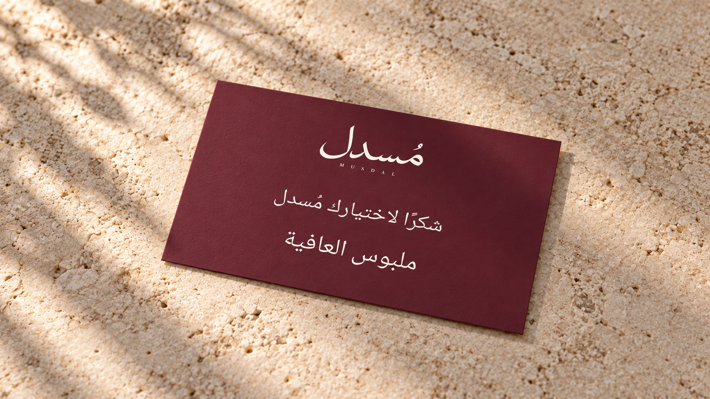
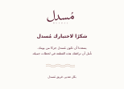
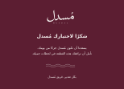
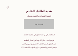
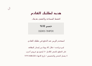
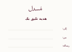
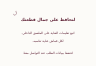
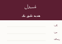

بطاقة الشكر الصغيرة · معتمدة
وجه بورغندي، شعار أوف وايت، «شكرًا لاختيارك مُسدل» و«ملبوس العافية». مقاس العمل المرجعي 90 × 55 مم.
بطاقة الشكر الصغيرة · معتمد

وجه بورغندي وشعار أوف وايت. النص المعتمد: «شكرًا لاختيارك مُسدل» و«ملبوس العافية». المقاس المرجعي 9 × 5.5 سم.
فتح الصورة كاملة ↗ · تنزيل الصورة المستقلةتنزيل أصل البطاقة SVG ↗ · بريف الديزاينر الحالي ↗

بروفات البطاقات والقشط السابقة · للتوثيق
البروفات التالية سابقة للاعتماد الحالي؛ تفاصيل الخصم والقشط ليست اعتمادًا تجاريًا جديدًا.
الخيار 1 · وجه الشكر الأوف وايت
148×105 مم قص نهائي؛ 154×111 مم مع النزف. المقترح التجاري 10% / 45 يومًا للمراجعة.

بروفة RGB، ليست اعتماد إنتاج. رمز وتاريخ المعاينة مؤقتان.
الخيار 2 · وجه الشكر البورغندي
148×105 مم قص نهائي؛ 154×111 مم مع النزف. المقترح التجاري 10% / 45 يومًا للمراجعة.

بروفة RGB، ليست اعتماد إنتاج. رمز وتاريخ المعاينة مؤقتان.
ظهر مشترك · قبل القشط
148×105 مم قص نهائي؛ 154×111 مم مع النزف. المقترح التجاري 10% / 45 يومًا للمراجعة.

بروفة RGB، ليست اعتماد إنتاج. رمز وتاريخ المعاينة مؤقتان.
ظهر مشترك · بعد القشط
148×105 مم قص نهائي؛ 154×111 مم مع النزف. المقترح التجاري 10% / 45 يومًا للمراجعة.

بروفة RGB، ليست اعتماد إنتاج. رمز وتاريخ المعاينة مؤقتان.
البطاقات المرافقة · نفس خيار اللون
الخيار 1 / فاتح


الخيار 2 / بورغندي

إهداء 100×70 مم، عناية 90×60 مم. خيار الإهداء البورغندي بترويسة داكنة ومساحة كتابة فاتحة.